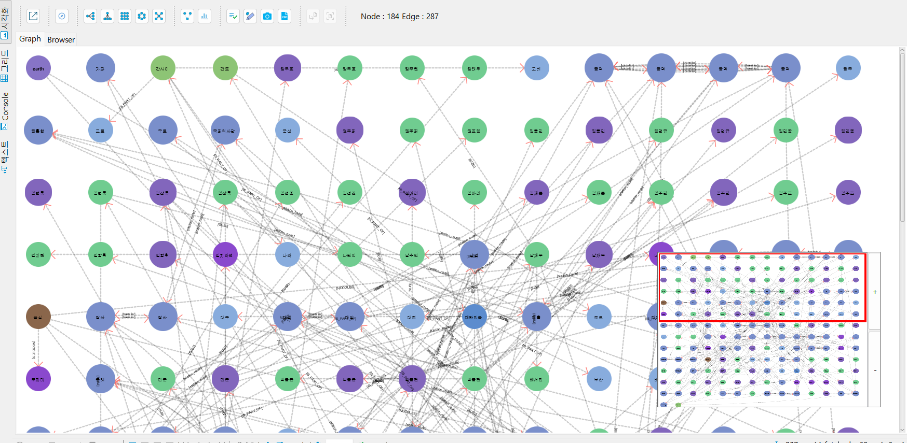
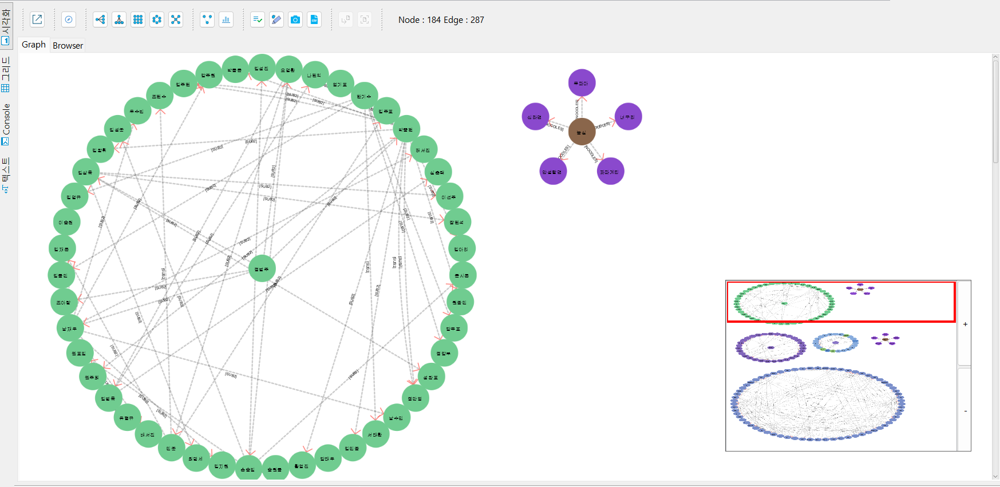

데어터 결과창 기타기능¶
Layout 정렬 기능¶
- 시각화 된 결과를 총 5가지 형식으로 정렬하는 기능
- Horizontal Tree (수평 가지형태로 표시)
- Vertical Tree (수직 가지 형태로 표시)
- Grid (일정한 간격으로 격자 형태로 표시)
- Circle (그룹 별로 묶어 원형 형태로 표시)
- Spring (서로 붙지 않도록 스프링처럼 서로 미는 형태)
Horizontal Tree
Vertical Tree
Grid
Circle
Spring
최단 경로 구하기¶
최단 경로(Shotest Path) 기능은 두 정점을 선택하여 최단 경로를 구하는 기능이다.
파란색 표시 메뉴를 선택하면 노란색 창이 나타나며, 이후 첫번째 노드를 더블 클릭한 후 노란책 창에 콤보 박스로 이용하여 가중치를 선택 할 수 있다. 가중치 선택은 Default(가중치 1)와 Property 값들이다.
Default일 경우 모든 경로 당 가중치를 1로 계산하여 경로가 표시되고, Property를 선택 할 경우 Property 타입이 정수 일 경우 해당 Property의 정수 값을 가중치로 계산하여 경로가 표시된다. Property 값이 정수가 아닐 경우에는 가중치 1로 계산된다.

Chart 기능¶
Chart 기능은 정점과 속성을 선택하여 그래프에 표시 된 정점을 대상으로 분포도를 확인 할 수 있는 기능이다.
빨간색 표시된 버튼을 통해 Chart 기능을 활성화 할 수 있고, 노란색 표시된 Chart 창을 통해 정점과 속성을 선택하여 분포도를 확인 할 수 있다.
분포도는 아래 그림과 같이 현재 표시된 시각화 된 그래프 안에서 분포도를 표시하거나 전체 데이터 베이스에서 분포도를 표시할 수 있다.
Value 창으로 세부 정보 확인¶
빨간색 표시된 버튼을 통해 Value 창 표시 할 수 있으며, 마우스를 통해 정점, 간선를 한번 클릭하면 선택 된 정점 또는 간선 정보 (ID, Label, Type, Propery 값)를 확인 할 수 있다.
행을 선택 후 오른쪽 마우스 버튼으로 Context 메뉴를 활성화 하면 값 또는 이름을 복사 할 수 있는 메뉴가 나타난다.
디자인 편집 기능¶
빨간색 표시된 버튼을 통해 디자인 편집 기능을 활성화 할 수 있으며, 노란색으로 활성화 된 창을 통해 정점의 Label, 간선의 Type을 그룹별로 디자인 편집이 가능하다.
정점은 크기, 색상, 글자 크기등을 변경 할 수 있고 정점 내부에 표시되는 글자는 ID, LABEL, Property를 선택하여 보여지는 글자를 변경 할 수 있다.
간선은 간선의 모양, 두께, 색상, Type의 글자 크기를 변경 할 수 있다.
Capture 하기¶
아래 화면에서 노란색으로 표시된 [사진기] 버튼을 통해 시각화 View 내용을 그림파일로 저장할 수 있다.
결과 데이터 CSV 파일로 내보내기¶
빨간색으로 표시 된 버튼을 통해 csv 파일을 저장할 경로와 이름을 설정할 수 있다. 설정 완료 후 [OK]를 누르면 CSV 파일로 저장이 완료 된다.